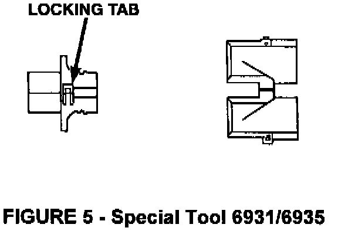
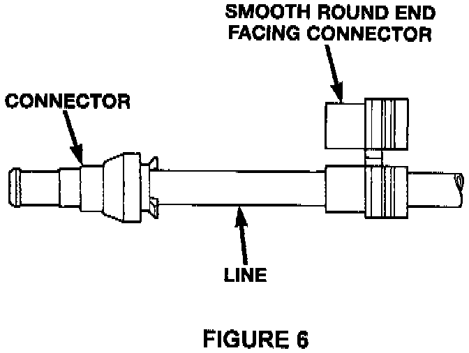
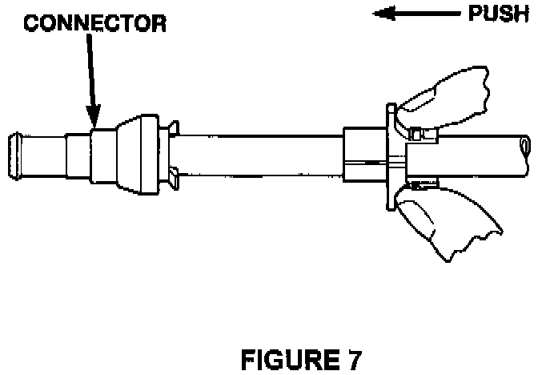
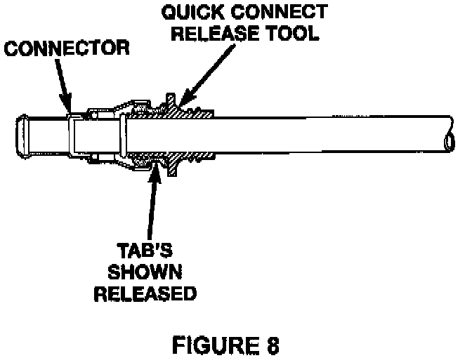
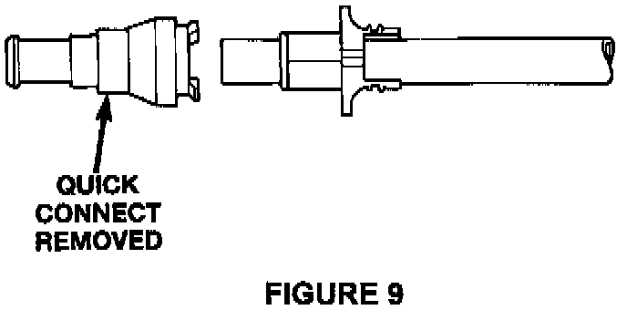

Tool Removal Procedure
1. Select the proper tool. For vehicles equipped with the 5.9L Cummins Diesel or the 8.0L gas engine (1/2" cooler lines), use Miller Special Tool 6931. All other vehicles use a 3/8" cooler line and require Miller Special Tool 6935.
2. Unlock the small tab on side of tool and open (Figure 5).

3. Wrap tool around line with smooth round end facing the connector (Figure 6).

4. Close removal tool and lock tab. Push removal tool up to connector (Figure 7).

5. Push removal tool into connector. Tool will push out retainer legs, pull connector over line bead (Figure 8).

6. Pull line connector while holding onto line with one hand and the connector with the other (Figure 9).